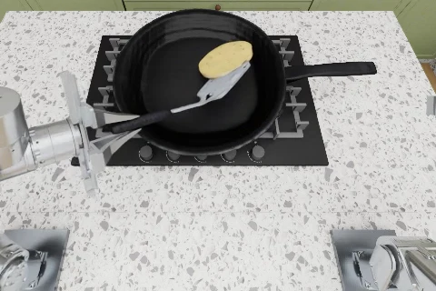
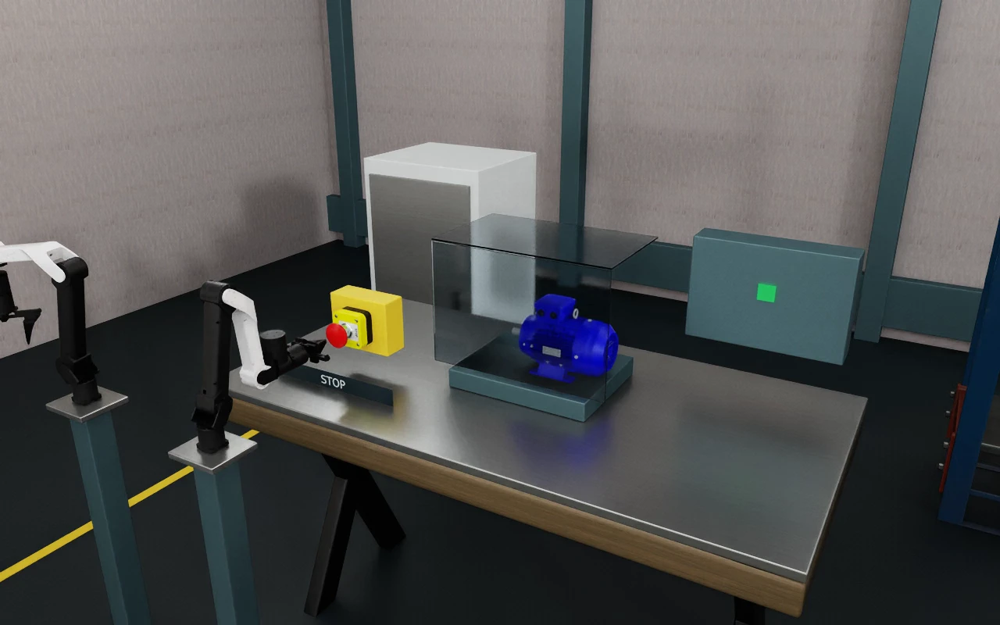
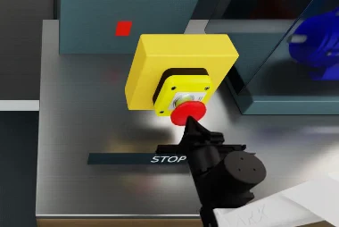
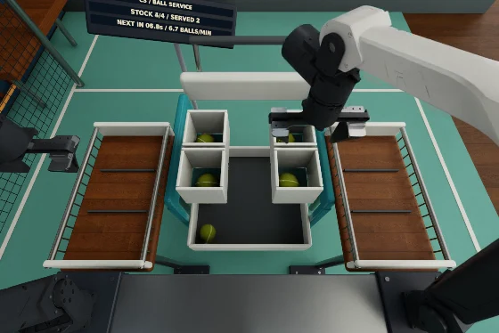

A · Temporal WindowWhen to act?
Act during the valid interval. Too early can be just as wrong as too late.
earlyvalid windowlate
PANCAKE FLIP
Wait until the underside is golden, then flip it in time.
TIME-AWARE ROBOTIC INTELLIGENCE
The right action.
At the right time.
A unified benchmark for robots that must act within a window,
react to an event, or keep up with demand.
Time-constrained manipulation across Laboratory, Healthcare, Household, Industry, and Sports & games.
Explore the 60-task catalog
INDUSTRY
Detect the motor fault and press the emergency stop in time.
THE BENCHMARK
A physically correct action can still fail. RoboClock makes timing part of the task, across everyday workflows and specialized manipulation.

A · Temporal WindowAct during the valid interval. Too early can be just as wrong as too late.
PANCAKE FLIP
Wait until the underside is golden, then flip it in time.

B · Event-ReactiveNotice an external event and respond before its deadline.
MOTOR EMERGENCY STOP
Press the stop button after the fault warning appears.

C · ThroughputComplete enough correct units to keep pace with demand.
BALL-MACHINE SERVICE
Keep the feeder stocked for repeated scheduled demand.
EXPLORE THE SUITE
Browse all 60 tasks. Each has a physical goal and a primary temporal obligation.
No tasks match your search. Try another keyword or clear the filters.
LATENCY-ALIGNED EVALUATION
RoboClock charges model inference and control-interface delay to environment time, so actions arrive in a world that has moved on.
During the charged inference delay, previously committed controls remain in effect. The next action is based on an observation that is already older.
Conceptual timing illustration; not a measured episode.
How far did the robot get through the physical milestones?
Did it achieve the physical goal with timing relaxed?
Did it meet the goal and temporal constraints with inference paused?
Did it succeed when inference and control delay count?
SELECTED RESULTS
Compare four fine-tuned end-to-end policies across all 60 tasks. The metric changes what success means.
Latency-aligned temporal success, including model inference and control-interface delay.
ROBOCLOCK
A benchmark for studying physical competence, temporal reasoning, and execution latency together.